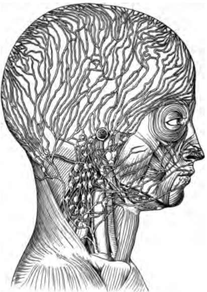
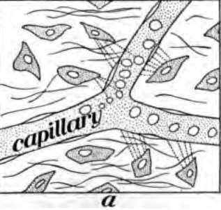
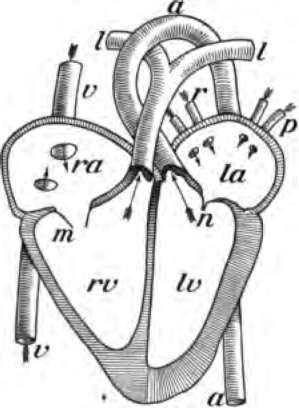
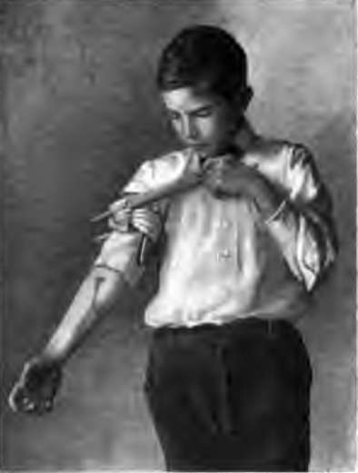

The Blood And Its Passage Through The Body. Part 3
Description
This section is from the book "The Human Body And Health", by Alvin Davison. Also available from Amazon: The Human Body and Health.
The Blood And Its Passage Through The Body. Part 3
Fig. 57. Lymph vessels just under the skin of the finger.
Poisons or medicines introduced under the skin are taken up by the lymph vessels. Bacteria in the mouth and digestive canal may enter the soft tissues and then get into the lymph vessels. The lymph vessels pass through bodies named lymph nodes or glands. These are able to destroy many bacteria.
Fig. 58. Lymph vessels and lymph nodes or glands.
Fig. 59. Blood plasma passing out of capillary to feed the body cells.
How The Blood Feeds The Body
The tiny capillaries and lymph vessels in the millions of villi sticking out into the cavity of the small intestine drink in the liquid food. It is then carried by the blood to the liver, or by the lymph vessels to the veins in the neck. By the veins of the liver and those of the neck, the food reaches the heart, which sends it with the blood through the arteries to all parts of the body. All arteries lead into capillaries which allow the food to pass out through their walls to nourish the body cells.
Course Of The Blood
The blood always flows in one direction, because the four valves in the heart close when the blood attempts to go backward. Starting from the left ventricle, the blood goes through the arteries of the body, then passes through the capillaries into the veins of the body, to be returned to the right auricle. From here it flows to the right ventricle to be forced through the arteries to the lungs, from which the veins return it to the left auricle sending it to the left ventricle.
What Makes The Blood Move
The heart is the main force causing the movement of the blood around within the body. This movement is called the circulation. The blood goes from the heart to the toes, and returns in less than one minute. In the arteries it does not flow steadily but in waves. This may be felt by placing the finger lightly on the artery in the wrist at the base of the thumb.
The beating of an artery is called the pulse. It is produced by the squeezing together and the pushing out of the walls of the heart, forming the heart beat. The heart beats in a grown person about seventy times per minute and in babies 140 times each minute.
Fig. 60. Diagram of the heart with its front half removed. ra, right auricle; rv, right ventricle; la, left auricle; lv, left ventricle; a, aorta; v, chief vein of trunk; r and p, veins from lungs; l, arteries to the lungs; m, valve open as when blood flows from auricle to ventricle; n, valve closed as when blood goes through the aorta.
The squeezing together of the walls of the ventricles pushes the blood into the arteries because the valves prevent it from flowing back into the auricles. The pushing apart of the walls of the ventricles tends to suck the blood down from the auricles which beat feebly to aid the flow of the blood. The valves at the openings of the arteries from the ventricles prevent the blood from coming back into them. The elasticity of the arteries and the pressure of the muscles on them in moving and breathing, aid in pushing the blood along.
How Exercise Affects The Heart
After walking up hill, or running for a few minutes, the heart will beat much faster and stronger. This is because more oxygen was needed by the muscles. At every movement of the body oxygen is used up. The hungry tissues cry out for more and order the heart to beat quicker, so that the blood will flow faster, and thus carry more oxygen from the lungs. Very prolonged and violent exercise such as jumping the rope or continuous running, overworks the heart, and may cause sudden death.
Fainting
In crowded houses where there is much heat and impure air, or because of fright the heart may become weak and beat very slowly. Too little blood is then sent to the head, the person becomes dizzy and falls into a deep sleep. This is called fainting. The person should be laid flat on the back, on the floor, the clothing loosened, and the windows opened wide. A few splashes of cold water in the face are helpful. Recovery usually occurs in a few minutes.
Bleeding From A Wound
More than a quart of blood may ho lost without causing death. The flow from an artery is more dangerous than that from a vein, because it runs out with so much more force that a clot cannot form to clog up the break. The flow from an artery is by spurts, while that from a vein is a steady stream.
Fig. 61. Stopping the flow of blood from an artery in forearm. Note that the stick under the handkerchief presses on the main artery-near the armpit.
The flow from a small vein or artery may be stopped by merely tying a clean cloth over the wound. To stop the flow from a larger vessel, a handkerchief or cloth should be tied loosely about the limb and then twisted tight by placing a stick underneath and twisting it around once or twice. If a vein is cut, the cloth should be placed on the side of the wound away from the heart, but if an artery is cut, the cloth must be placed between the wound and the heart. If the wound is made by a dirty nail or instrument, it must be well washed out with water that has been boiled, to kill the bacteria. A few drops of turpentine, alcohol or other germ killer may then be poured on the wound, after which it should be bound up in a clean cloth.
Continue to:
- prev: The Blood And Its Passage Through The Body. Part 2
- Table of Contents
- next: The Blood And Its Passage Through The Body. Part 4